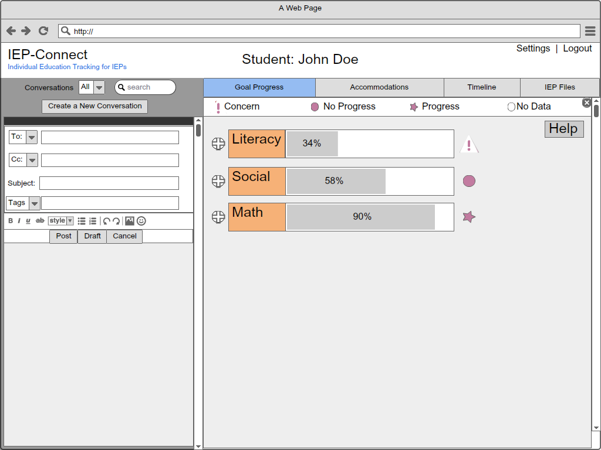
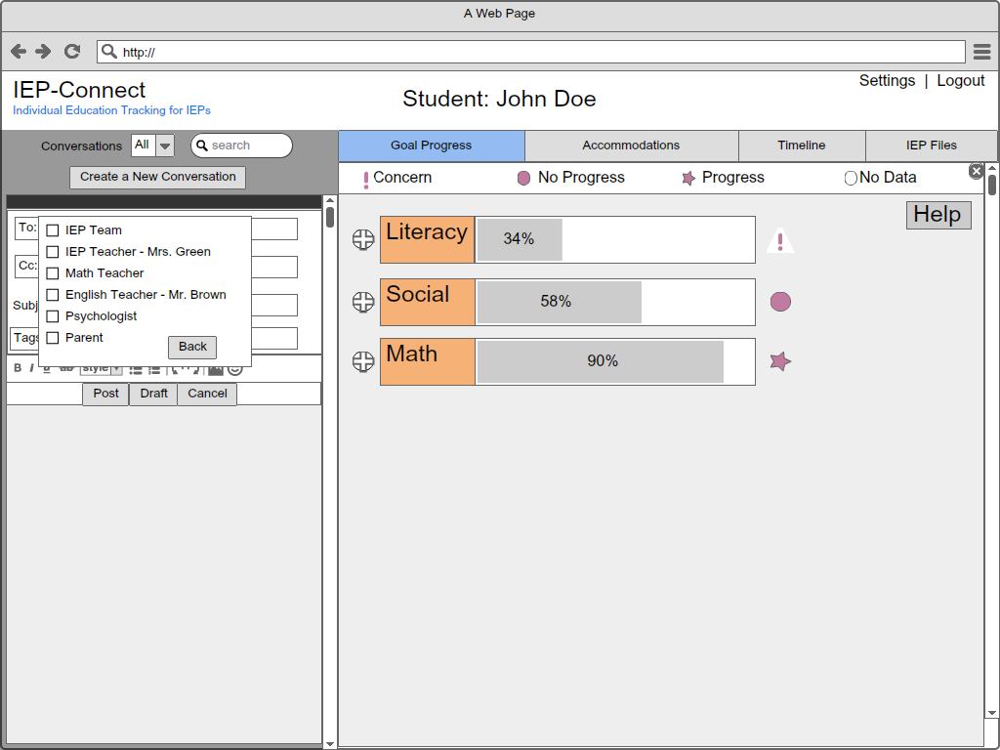
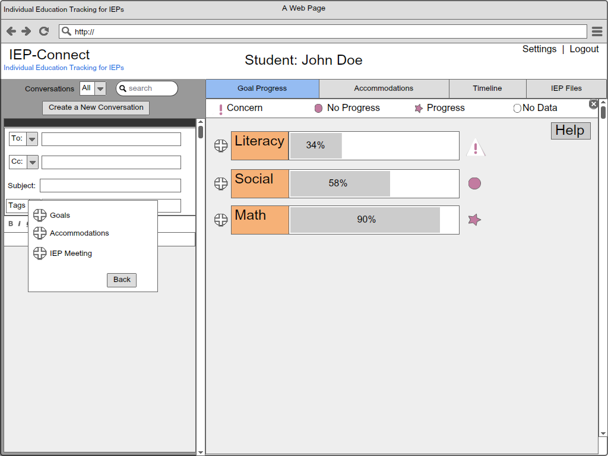

Step 1: Click “Create New Conversation”
Step 2: Select “To” field
Step 3: Select Mrs. Green and click the back button
Step 4: Select “Goals”
Step 5: Click on “Literacy”

Step 6: check write a paragraph in ....

Step 7: Write the new conversation message and click post

Step 8: Verify new conversation was posted